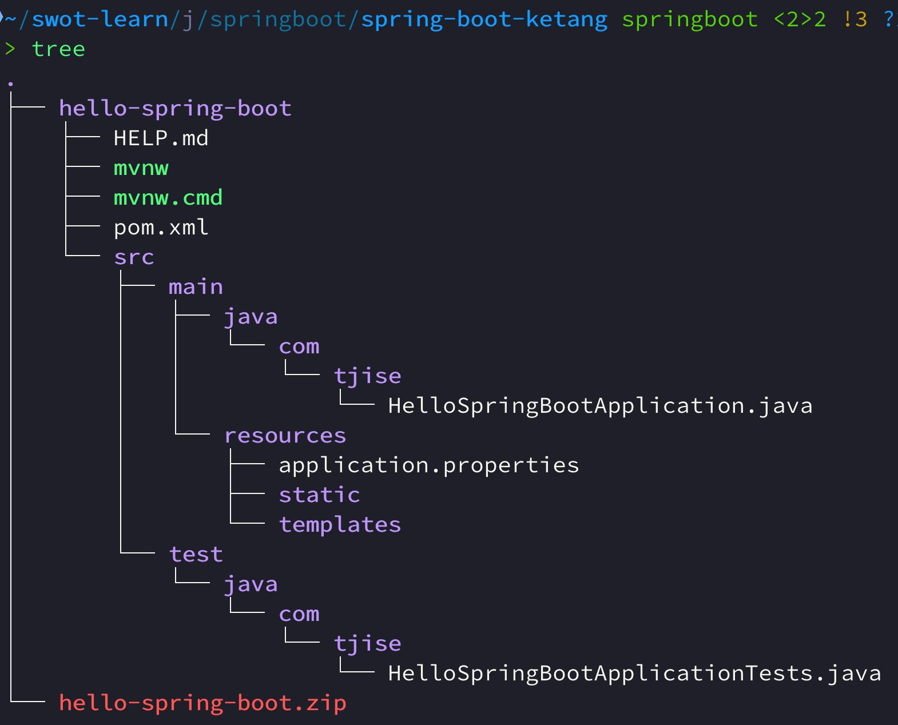

官网介绍
官网介绍 https://spring.io/
Spring Boot: https://spring.io/projects/spring-boot
Spring Boot 可以帮助我们非常快速的构建应用程序、简化开发、提高效率。
如果 IDEA 是社区版本，可以使用下面的网页方式来创建 Spring Boot 项目
-
创建 Spring Boot 项目 3 版本 https://start.spring.io/
-
创建 Spring Boot 项目 2 版本 https://start.aliyun.com/
-
Project: Maven
-
Language: java
-
SpringBoot: 2.7.18 https://github.com/spring-projects/spring-boot/releases?q=v2.7&expanded=true
-
Group: com.xxx 自己命名
-
打包方式: jar
-
java版本: 8
-
Dependencies: mysql Driver、Spring Web、lombok（方便创建实体类）
-
安装 JDK
建议下载 jdk-8-lts: https://bell-sw.com/pages/downloads/#jdk-8-lts
| 上面文档是 OpenJDK 的安装方式，实际上我使用的是 Oracle JDK，捂脸ing… |
验证安装:
java -version
java version "1.8.0_301" Java(TM) SE Runtime Environment (build 1.8.0_301-b09) Java HotSpot(TM) 64-Bit Server VM (build 25.301-b09, mixed mode)
创建一个空的工程
创建一个空的工程后，我们可以在该工程中创建或导入多个模块，这样方便不同的功能模块放在一起。
-
运行开发工具 IDEA
-
New Project → Empty Project → (指空项目名称，如) spring-boot-ketang
-
删除 .iml 文件，因为我们会使用 maven 来管理项目(不使用 idea 来管理项目)。
-
进入 File → Project Structure 对话框，选择 Modules，删除默认创建的模块(后面我们都是自己来创建模块，在上面删除了 .iml 文件后，默认创建的模块可能会被自动删除)。
快速入门
需求：使用 Spring Boot 开发一个 web 应用，浏览器发起请求 /hello 后，给浏览器返回字符串 "Hello World!"。
initializr 创建 Spring Boot 模块
举例创建名称为: hello-spring-boot
-
填写参数
-
选择起步依赖
如果要创建 2 系列版本的项目，可以先创建 3 系列版本的项目，然后再更改 pom.xml 文件。 更改方式参后面导入模块内容 |
导入自己创建的 Spring Boot 模块
-
解压下载的 Spring Boot 代码，如 hello-spring-boot.zip，可以发现就是一个 Maven 模块的目录结构。
 -
使用 IDEA 导入 hello-spring-boot 模块
-
进入 File → Project Structure 对话框，选择 Modules
-
点击
+号，选择要导入的模块目录，如 hello-spring-boot
-
-
在导入时有两个选项：
-
Create module from existing sources（从现有源创建模块）用于导入没有使用构建工具如 maven 的项目
-
Import module from external model（从外部模型导入模块）用于导入使用构建工具如 maven 创建的项目。因为我们是用 maven 来管理代码的，所以选择
Import module from external model
-
-
然后会看见 IDEA 自动安装了依赖。
-
更改 hello-spring-boot 中的 pom.xml 文件中的 Spring Boot 和 JDK 版本号。
1 2 3 4 5 6 7 8 9
<parent> <groupId>org.springframework.boot</groupId> <artifactId>spring-boot-starter-parent</artifactId> <version>2.7.18</version> <relativePath/> <!-- lookup parent from repository --> </parent> <properties> <java.version>1.8</java.version> </properties>
定义控制类并添加方法
#file spring-boot-ketang/hello-spring-boot/src/main/java/com/tjise/HelloController.java
1
2
3
4
5
6
7
8
9
10
11
12
13
14
package com.tjise;
import org.springframework.web.bind.annotation.RequestMapping;
import org.springframework.web.bind.annotation.RestController;
@RestController
public class HelloController {
@RequestMapping("/hello")
public String hello(){
System.out.println("Hello World");
return "Hello World";
}
}
运行测试
找到引导类: src/main/java/<group>/HelloWorldApplication.java
右键选择运行该引导类
在浏览器中输入地址进行测试: http://localhost:8080/hello
可以看见页面中显示 "Hello World!" 字样。
HTTP协议
HTTP 概述
HTTP 协议：超文本传输协议 Hyper Text Transfer Protocol，规定了浏览器和服务器之间数据传输的规则。
HTTP 协议特点：
-
基于 TCP 协议: 面向连接，安全。
-
基于请求—响应模型: 一次请求对应一次响应
-
HTTP 协议是无状态协议: 对于事务处理没有记忆能力。每次请求—响应都是独立的。理解：下一次请求不会携带上一次数据。
-
缺点：多次请求间不能共享数据。
-
优点：速度快。
-
TCP/IP 四层模型:
-
网络接口层 - 管理硬件和本地网络之间的数据通信。
-
网络层 - 处理数据包的路由与传输。
-
传输层 - 提供端到端的可靠或不可靠数据传输。
-
应用层 - 为用户提供网络服务和应用接口。
三者关系:
-
IP 协议 在网络层负责将数据从源设备传送到目标设备。
-
TCP 协议 在传输层基于IP协议，确保数据传输的可靠性和完整性。
-
HTTP 协议 在应用层，使用TCP协议传输HTTP请求和响应，从而实现网页内容的传输。
HTTP 请求协议 GET
您可以在浏览器中打开一个网址，查看 GET 发送的内容。
GET /hello HTTP/1.1
Host: localhost:8080 User-Agent: Mozilla/5.0 (Macintosh; Intel Mac OS X 10.15; rv:131.0) Gecko/20100101 Firefox/131.0 Accept: text/html,application/xhtml+xml,application/xml;q=0.9,image/avif,image/webp,image/png,image/svg+xml,*/*;q=0.8 Accept-Language: zh-CN,zh;q=0.8,zh-TW;q=0.7,zh-HK;q=0.5,en-US;q=0.3,en;q=0.2 Accept-Encoding: gzip, deflate, br, zstd Connection: keep-alive Cookie: _ga_E3C3GCQVBN=GS1.1.1727626100.1.1.1727626112.0.0.0; _ga=GA1.1.1602099806.1727626101 Upgrade-Insecure-Requests: 1 Sec-Fetch-Dest: document Sec-Fetch-Mode: navigate Sec-Fetch-Site: none Sec-Fetch-User: ?1 Priority: u=0, i
| GET 请求一般在规范中无请求体，实际上也可以带请求体，只要服务端 api 能处理就行。 |
HTTP 请求协议 POST
Firefox 浏览器开发者模式支持发 POST 请求，您可以在 Firefox 浏览器中打开一个网址，查看 POST 发送的内容。
POST /hello HTTP/1.1
Host: localhost:8080 User-Agent: Mozilla/5.0 (Macintosh; Intel Mac OS X 10.15; rv:131.0) Gecko/20100101 Firefox/131.0 Accept: text/html,application/xhtml+xml,application/xml;q=0.9,image/avif,image/webp,image/png,image/svg+xml,*/*;q=0.8 Accept-Language: zh-CN,zh;q=0.8,zh-TW;q=0.7,zh-HK;q=0.5,en-US;q=0.3,en;q=0.2 Accept-Encoding: gzip, deflate, br, zstd Connection: keep-alive Cookie: _ga_E3C3GCQVBN=GS1.1.1727626100.1.1.1727626112.0.0.0; _ga=GA1.1.1602099806.1727626101 Upgrade-Insecure-Requests: 1 Sec-Fetch-Dest: empty Sec-Fetch-Mode: no-cors Sec-Fetch-Site: same-origin Sec-Fetch-User: ?1 Content-Length: 16 Origin: http://localhost:8080 Priority: u=0, i Pragma: no-cache Cache-Control: no-cache
{"name": "Swot"}
HTTP 响应协议
HTTP/1.1 200
Content-Type: text/html;charset=UTF-8 Content-Length: 11 Date: Wed, 02 Oct 2024 07:17:33 GMT Keep-Alive: timeout=60 Connection: keep-alive
Hello World
HTTP 响应状态码
常见响应码:
-
200: 响应成功
-
301/302: 重定向，比如访问 http://www.baidu.com 会被服务器重定向到 https://www.baidu.com，firefox 调试 302 时需要清除缓存并重启浏览器。
-
404: 找不到 url 资源，客户端请求了不存在的资源地址
-
500: 服务器错误
HTTP 协议解析
对请求行、请求头、请求体进行解析。 主要是为了了解解析原理的，自己不会写 web 服务器的代码。我们直接使用 Tomcat 服务器。
使用下面的例子对原理进行了解。
自定义 Socket 服务器解析 HTTP 请求
-
File → Project Structure 对话框，选择 Modules
-
点击 + 号，选择 New Module
-
选择 Java，再填写必要的信息后创建模块，如 simple-http-server
| 该例子会将请求中的「请求行」、「请求头」、「请求体」都打印出来。 |
#file spring-boot-ketang/simple-http-server/src/main/java/SimpleHttpServer.java
1
2
3
4
5
6
7
8
9
10
11
12
13
14
15
16
17
18
19
20
21
22
23
24
25
26
27
28
29
30
31
32
33
34
35
36
37
38
39
40
41
42
43
44
45
46
47
48
49
50
51
52
53
54
55
56
57
58
59
60
61
62
63
64
65
66
67
68
import java.io.*;
import java.net.ServerSocket;
import java.net.Socket;
import java.util.HashMap;
import java.util.Map;
public class SimpleHttpServer {
public static void main(String[] args) {
try (ServerSocket serverSocket = new ServerSocket(8081)) {
System.out.println("Server started on port 8081...");
while (true) {
// serverSocket.accept() 阻塞等待新的客户端连接，一旦有客户端连接，它返回一个 Socket 对象，表示与该客户端之间的通信。
try (Socket clientSocket = serverSocket.accept()) {
handleClient(clientSocket);
} catch (IOException e) {
e.printStackTrace();
}
}
} catch (IOException e) {
e.printStackTrace();
}
}
private static void handleClient(Socket clientSocket) throws IOException {
// 获取输入流读取请求数据
InputStream input = clientSocket.getInputStream();
BufferedReader reader = new BufferedReader(new InputStreamReader(input));
// 解析请求行
String requestLine = reader.readLine();
System.out.println("Request Line: " + requestLine);
// 解析请求头
Map<String, String> headers = new HashMap<>();
String headerLine;
while (!(headerLine = reader.readLine()).isEmpty()) {
String[] header = headerLine.split(": ");
headers.put(header[0], header[1]);
}
System.out.println("\nRequest Headers:");
for (Map.Entry<String, String> entry : headers.entrySet()) {
System.out.println(entry.getKey() + ": " + entry.getValue());
}
// 读取请求体 (仅处理 POST 请求)
if (requestLine.startsWith("POST")) {
int contentLength = Integer.parseInt(headers.getOrDefault("Content-Length", "0"));
char[] body = new char[contentLength];
reader.read(body, 0, contentLength);
System.out.println("\nRequest Body: ");
System.out.println(new String(body));
}
// 发送响应
OutputStream output = clientSocket.getOutputStream();
PrintWriter writer = new PrintWriter(output, true);
writer.println("HTTP/1.1 200 OK");
writer.println("Content-Type: text/plain");
// 正确设置 Content-Length
String responseBody = "Hello from SimpleHttpServer";
writer.println("Content-Length: " + responseBody.length());
writer.println();
writer.println("Hello from SimpleHttpServer");
}
}
Tomcat(Web Server) 了解
- Web 服务器
-
-
Web 服务器是一个应用程序（软件），对 HTTP 协议的操作进行封装，使得程序员不必直接对协议进行操作，让 Web 开发更加便捷。
-
主要功能是对请求数据解析，响应数据封装。
-
- Tomcat
-
-
Tomcat 是 Apache 软件基金会一个核心项目，是一个开源免费的轻量级 Web 服务器，支持 Servlet/JSP 少量 JavaEE 规范。
-
Tomcat 也被称为 Web 容器、Servlet 容器。JavaWeb 的 .war 包需要放在 Tomcat 下才能运行。
|
Spring Boot 已经内置了 Tomcat 服务器
|
- JavaEE
-
-
Java Enterprise Edition, Java 企业版。指 Java 企业级开发的技术规范总和。
-
包含 13 项技术规范 JDBC, JNDI, EJB, RMI, JSP, Servlet, XML, JMS, Java IDL, JTS, JTA, JavaMail, JAF。
-
Tomcat 安装使用
|
Tomcat 9 need JDK8，我们使用了 JDK8，所以下载 Tomcat9。 Tomcat 10 need JDK11 |
- INSTALL
-
绿色版，直接解压即可
- UNINSTALL
-
直接删除目录即可
- START
-
-
双击 bin\startup.bat 或 bin/startup.sh
-
- STOP
-
-
强制关闭: 直接 x 掉运行容器
-
正常关闭: bin\shutdown.bat 或 bin/shutdown.sh
-
正常关闭: ctrl+c
-
- PORT
-
-
修改 conf/server.xml
<Connector port="8080" protocol="HTTP/1.1" connectionTimeout="20000" redirectPort="8443" maxParameterCount="1000" /> -
HTTP 协议默认端口号为 80，如果将 Tomcat 端口号改为 80，则将来访问 Tomcat 时，将不用输入端口号。
-
系统进程有可能占用 80 端口，所以还是自己指定一个唯一的端口比较好，以实际需求为准。
-
Tomcat 启动时可能出现问题
-
端口号冲突：找到对应程序，将其关闭掉。或者更改 Tomcat 的端口号。
Caused by: java.net.BindException: Address already in use: bind
-
Windows 下启动窗口一闪而过：检查
JAVA_HOME环境变量是否配置正确-
可以在控制台下执行启动 Tomcat 的命令 statup.bat，查看到报错原因。
-
-
Windows 控制台中文乱码：修改 conf/logging.properties
java.util.logging.ConsoleHandler.encoding =UTF-8 → GBK-
因为 Windows 控制台默认是 GBK 编码
-